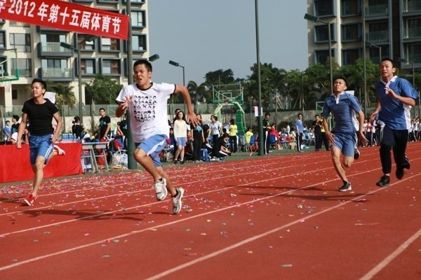
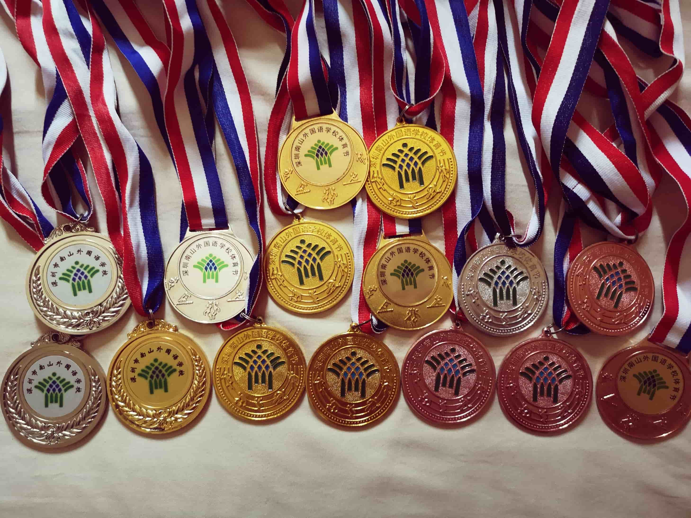
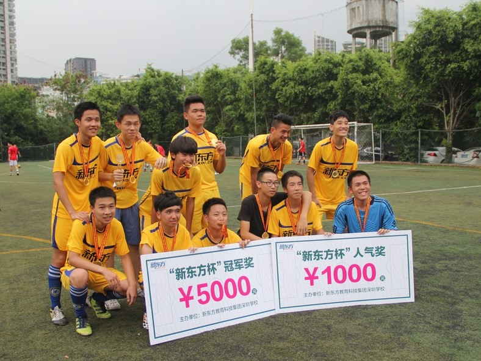
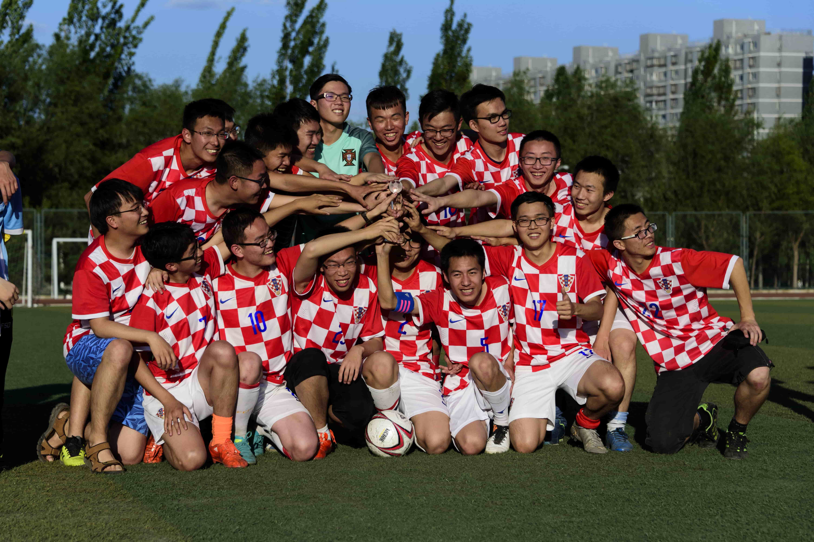

我初、高中都就读于深圳市南山外国语学校，并有幸成为滨海分校第一届学生。南外是小而精的学校，我在南外抓住了数不尽的发展机遇：模拟联合国、学生会、跆拳道、足球、朗诵、辩论、写生、仿真机器人、园游会主持等等。我十分感激一路上遇到的恩师们：高庆媛级长，姜美子老师，郑永红老师，胡珣韵老师，冯晓霞老师，从秋菊老师，曾小红老师，马云涛老师，孙华老师……♥初、高中母校今年向我邀稿：[南外初中]、[南外高中]。初中的邀稿里主要回忆了母校的点滴，我还做了一个视频，用上了我一直收藏着的初中照片；高中的邀稿里我给学弟学妹们介绍了一些经验。
15年南山区高考状元在我的意料之外。高考结束后，我只觉得自己发挥正常。我也没有对答案的习惯，考完就去毕业旅行了，把高考抛在了脑后。我对自己的期待原本是640+，没想到最后总分竟然来到了673分。
我小时候很擅长素描和写生，从小学到高中一直在学校的写生比赛团队，拿过无数届南山区现场写生一等奖。我很感谢小学到高中的美术老师：毕志轩老师、从秋菊老师和魏东老师。三位恩师都自带艺术家气质。前两位老师亲自带我参加过很多写生比赛，走遍了许多公园和校园。绘画对我的帮助是无形的，也许培养了我的一些基础美感。
可能是因为小时候喜欢玩“警察抓小偷”，总想争胜，加上初中跆拳道队的魔鬼训练，我的身体素质一直都很不错。初高中每一届校运会都能拿一块金牌，要么是百米赛跑，要么是1500米长跑。
 谈到我的高中和大学本科四年，最值得回忆的一定是足球。在高中，每天最后一节课下课铃一响，我们球友们都会冲到操场，分队比赛。不仅如此，我们还组建了业余足球队，连续战胜了育才、北师大和深高级，还拿到了深圳市的冠军。我们的实力远不如深高级，在决赛中的最后十五分钟经历了0-2落后、2-2追平和点球决胜。现在回想起来，我都惊讶于我当时的勇气：作为队长，我在比赛中就没有怕过，也没有沮丧过，一直在鼓励队友，大声呼喊。点球时我也主动上阵，对自己有百分百的自信。最后也骗过守门员打进了。还记得场边一个父亲和孩子说：这就是足球的魅力。
在大学，我和队友们又一次创造了奇迹。我们在17年体育文化节中，以7场进20球、仅失2球的战绩，夺得了高等理工学院迄今为止唯一一座足球冠军。在半决赛中，我们一度0-1落后。在一次角球中，作为中后卫的我走入对方禁区，突然加速绕跑，以此生最帅的姿势头球，造成对方守门员脱手，后被我方神锋戚佳艺补进（B站视频片段）。对手是绝望的，因为他们知道进我们一球有多困难。在对方士气低迷之时，我们很快又抓住对方后场传球失误，再入一球，以2-1赢得半决赛。
足球给了我太多美好的回忆，让我结识了很多战友和挚友，让我迅速融入了北航大家庭，也让我知道意志力和不服输的强大能量。
随着年龄增大，我愈发感觉到，那种纯真快乐的日子一去不复返了。生活中有越来越多的压力，每一个人都在拼命往上爬。只希望抓住青春的尾巴，在北航不多的日子里享受汗水和收获。